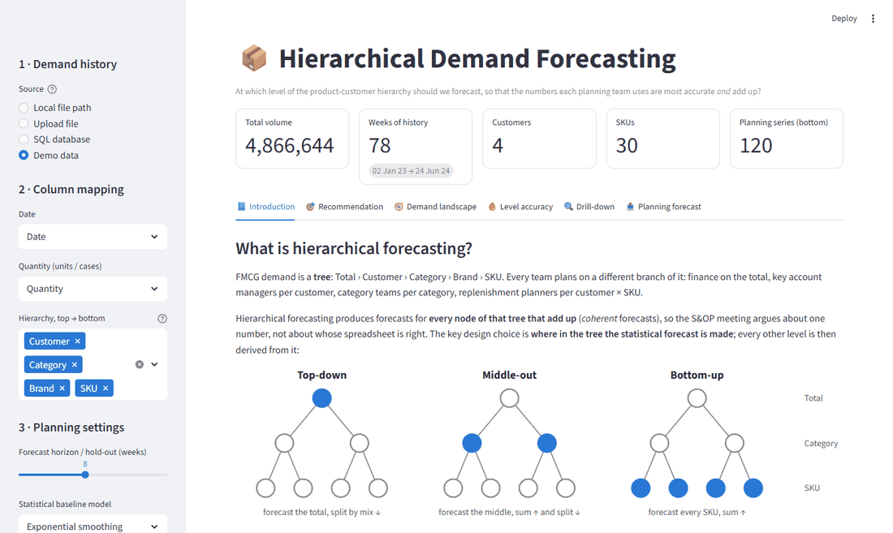

Real industry case · demand planning & forecasting
At Which Level Should an FMCG Business Forecast?
Finance plans the total, key account managers plan customers, category teams plan categories, and replenishment
planners plan every customer × SKU. With Optimentors, we used hierarchical forecasting to show which level of the
product–customer tree each of those numbers should come from. The answer is packaged as a decision app that a
planning team can point at its own ERP data.
ContextReal industry case · Optimentors · FMCG client · 2024
An FMCG demand plan is read at five or six levels at once. Each team forecasting its own level gives numbers that
don’t add up, so the S&OP meeting ends up reconciling spreadsheets. The common fix is to forecast the total
and split it down by historical mix. That is coherent, but nobody had checked what it costs at the level where
stock is actually positioned.
Planning level
Who uses it
Decision
Total business
Finance, S&OP executive review
Revenue plan, capacity
Customer
Key account management
Customer business plans
Category › Sub-category › Segment
Category and brand teams
Promotions, portfolio, production plan
Customer × SKU
Demand and replenishment planners
Replenishment, safety stock, DRP
The question from the business was simple: at which level should we forecast?
Data · descriptive analysis
0.9 million sell-in lines, one hierarchy
Daily shipments, June 2023 – July 2024, bucketed to weeks.
910k
daily sell-in lines
12
customers
1,970
SKUs
8,274
customer × SKU series
Each line carries a five-level path: Customer › Category › Sub-category › Segment › SKU.
Aggregating that tree gives about 10,200 series across the levels, each weekly and with partial edge weeks removed.
Diagnostic · forecastability
The top is smooth, the tail is not
Syntetos–Boylan demand classes (ADI / CV²) and an ABC Pareto analysis.
Every customer series is smooth. At the aggregate levels, 98–100% of volume shows a smooth demand pattern.
At customer × SKU, only 38% of series are smooth. The rest are intermittent, erratic or lumpy, but they carry just 17% of volume.
9% of SKUs make 80% of the volume, and 75% of SKUs sit in the C tail.
That is the textbook setting where the level you forecast at matters: good signal at the top, noise at the bottom,
and the replenishment decision at the bottom.
Predictive modelling · hierarchical forecasting
Forecast at every level, derive every other level
Top-down, middle-out and bottom-up, tested against each other.
Top-downForecast the total and split it by the recent 13-week mix.
Middle-outForecast a middle level, sum it up and split it down.
Bottom-upForecast every customer × SKU and sum.
The research phase used Nixtla’s statsforecast (AutoARIMA, seasonal naïve) and
hierarchicalforecast, which provides bottom-up, top-down, MinTrace, optimal combination and ERM
reconciliation. For the deliverable, the level-selection logic was rebuilt as a vectorised pandas engine. For each
forecast level it produces an exponential-smoothing forecast, then derives every planning level:
by summing when the planning level is higher, and by splitting on recent mix when it is lower. The
6 × 6 back-test over 8,274 series runs in about three seconds.

The decision app, shown on synthetic demo data: method intro, recommendation, forecastability, accuracy heatmap, drill-down and forecast export.
At the top, the level doesn’t matter. Total-business accuracy is 97.5% whichever level is forecast. Finance can use any coherent plan.
The cost of splitting grows as you go down. Each level of top-down split loses accuracy, from 1 point at category to 7 points at customer × SKU.
Rule for the planning process: forecast at the level where the decision is made, and roll up from there. Forecast bias stays within ±0.5% at every level.
Software delivery
A decision app a planning team can point at its own data
Streamlit · schema-agnostic · connects to files or the data warehouse.
Connectors: local CSV/Parquet path (large extracts without a browser upload), file upload, or a SQL query against the ERP or data warehouse.
Any hierarchy: map the date, quantity and one to six hierarchy columns in the sidebar.
Six views: method introduction, recommendation per planning level, forecastability landscape, accuracy and bias heatmaps, node drill-down, and a forward forecast exported as CSV for the APS or demand review.
All results on this page come from the client’s real sell-in data. Client data stays private. The recording and the public repository use a synthetic FMCG demo dataset with the
same structure.
Business value
What it’s worth
One coherent number per team, and less stock where stock is held.
+7.2 pts
customer × SKU accuracy vs top-down
≈29%
less safety stock, same service level
97.5%
total-business accuracy
~3 s
to back-test 8k series
Safety stock scales with forecast error. Cutting customer × SKU WAPE from 24.4% to 17.2% means roughly 29% less
buffer stock for the same service level, and the S&OP meeting starts from one coherent plan rather than
reconciling spreadsheets.